Code
library(ggplot2)
max_color = "red"
median_color = "blue"
tot_color = "green"This page documents visualizations of the ARRL Field Day 2010-2025 data.
Here I source the {ggplot2} library to make it easier to make plots later. I also define some default colors for those plots. Defining these here makes it easier to modify them site-wide later on.
library(ggplot2)
max_color = "red"
median_color = "blue"
tot_color = "green"The gathering and cleaning pages handle those functions. They save a cleaned data file that we reimport here.
A popular adage in computer science and data science is DRY WIT: Don’t Repeat Yourself; Write It Down.
I adopt that mantra here by automating each step and by saving the intermediate products.
fd <- readr::read_csv("data/aggregate/field-day-2010-2025.csv", show_col_types = FALSE)To begin, we create a smaller data summary.
fd_by_year <- fd |>
dplyr::group_by(year) |>
dplyr::summarize(
median_score = median(final_score, na.rm = TRUE),
max_score = max(final_score, na.rm = TRUE),
tot_score = sum(final_score, na.rm = TRUE),
median_xmtrs = median(transmitters),
max_xmtrs = max(transmitters),
median_particip = median(number_of_participants, na.rm = TRUE),
max_particip = max(number_of_participants, na.rm = TRUE),
tot_particip = sum(number_of_participants, na.rm = TRUE),
median_qsos = median(total_qsos, na.rm = TRUE),
max_qsos = max(total_qsos, na.rm = TRUE),
tot_qsos = sum(total_qsos, na.rm = TRUE),
n_stations = length(unique(call))
)This section visualizes Field Day scores across the 2010-2025 period.
fd_by_year |>
ggplot() +
geom_point(aes(x = year, y = median_score)) +
geom_line(aes(x = year, y = median_score), color = median_color) +
ylab("Median score")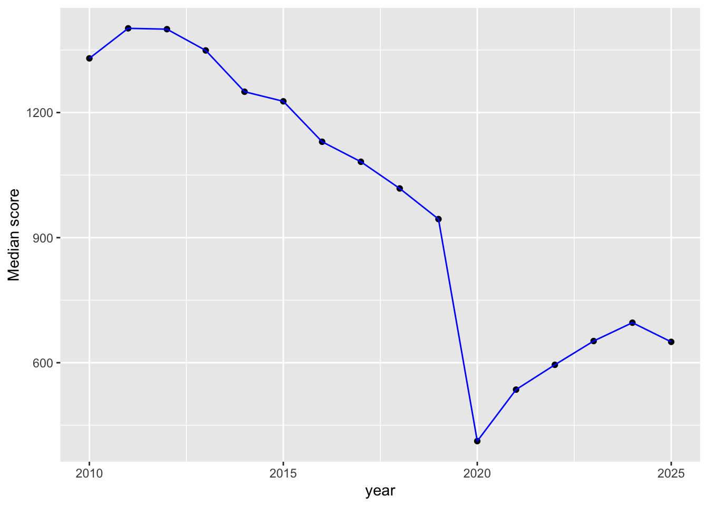
fd_by_year |>
ggplot() +
geom_point(aes(x = year, y = max_score)) +
geom_line(aes(x = year, y = max_score), color = max_color) +
ylab("Max score")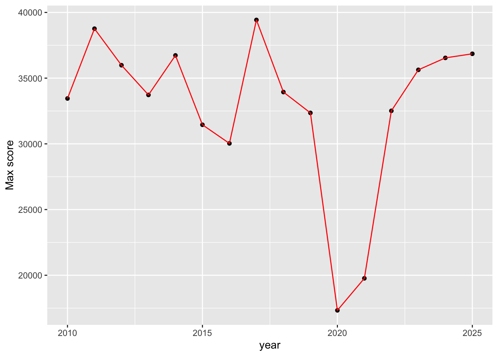
fd_by_year |>
ggplot() +
geom_line(aes(x = year, y = max_score), color = max_color) +
geom_line(aes(x = year, y = median_score), color = median_color) +
ylab("score")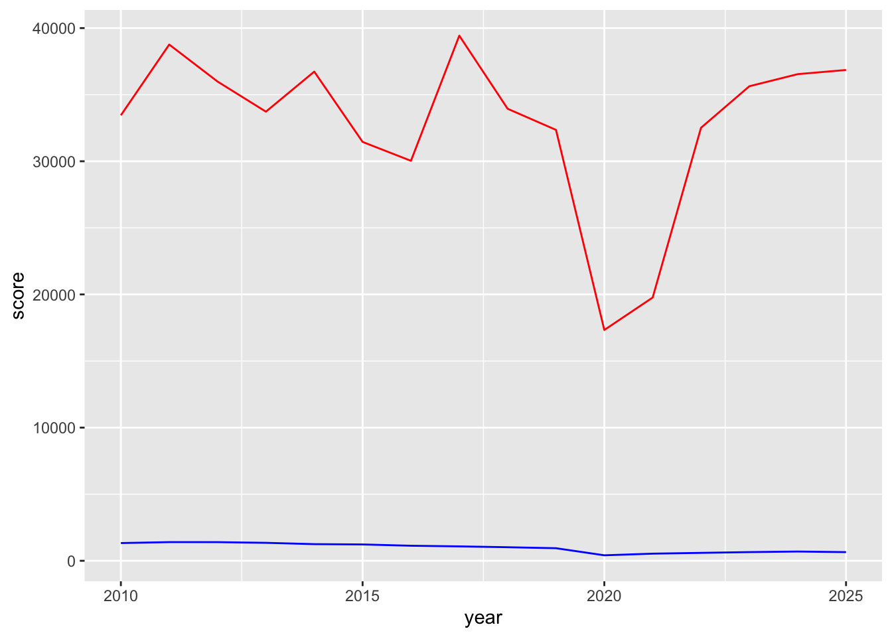
fd_by_year |>
ggplot() +
geom_line(aes(x = year, y = tot_score), color = tot_color) +
ylab("Score total")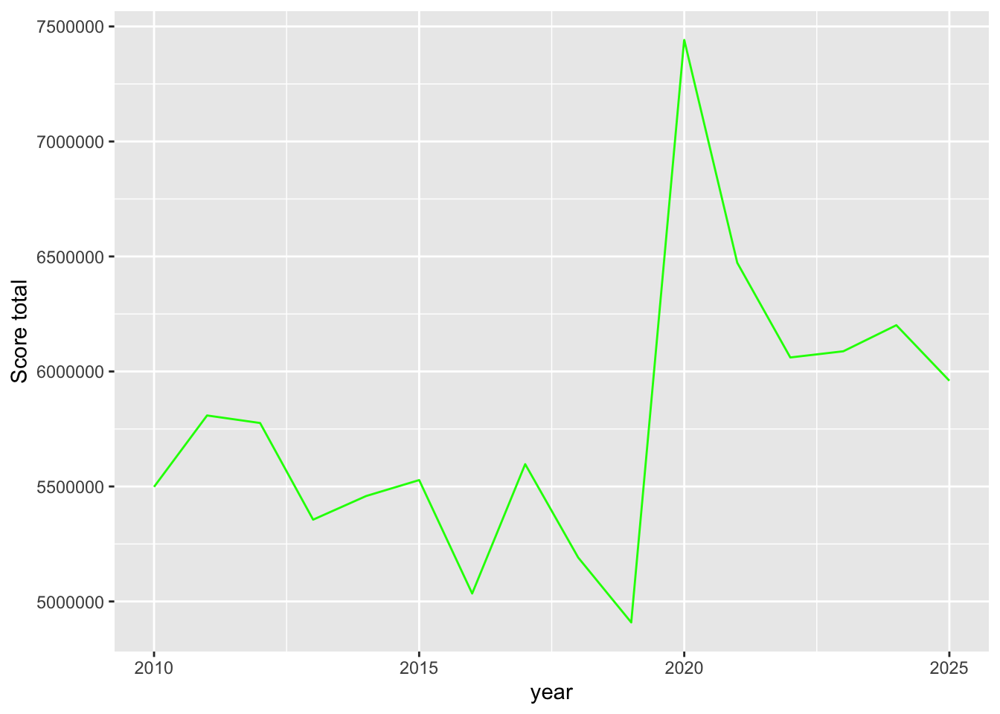
The following plots show data about the number of participants per station per year.
fd_by_year |>
ggplot() +
geom_point(aes(x = year, y = median_particip)) +
geom_line(aes(x = year, y = median_particip), color = median_color) +
ylab("Median participants/station")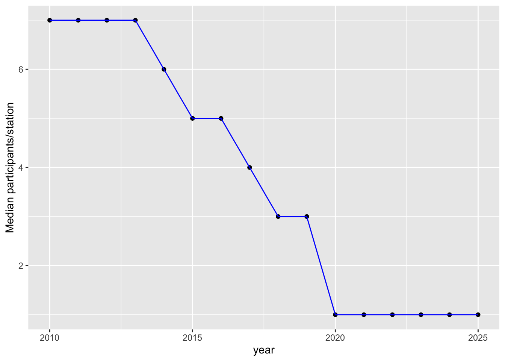
fd_by_year |>
ggplot() +
geom_point(aes(x = year, y = max_particip)) +
geom_line(aes(x = year, y = max_particip), color = max_color) +
ylab("Maximum participants/station")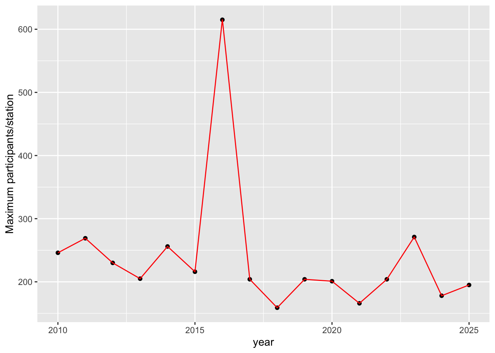
fd_by_year |>
ggplot() +
geom_line(aes(x = year, y = max_particip), color = max_color) +
geom_line(aes(x = year, y = median_particip), color = median_color) +
ylab("Participants/station")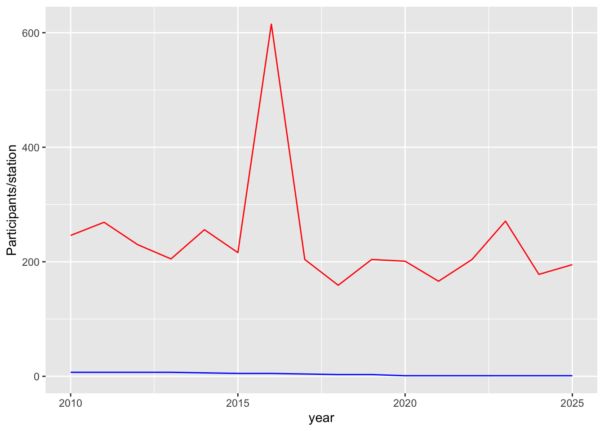
fd_by_year |>
ggplot() +
geom_line(aes(x = year, y = tot_particip), color = tot_color) +
ylab("Total participants")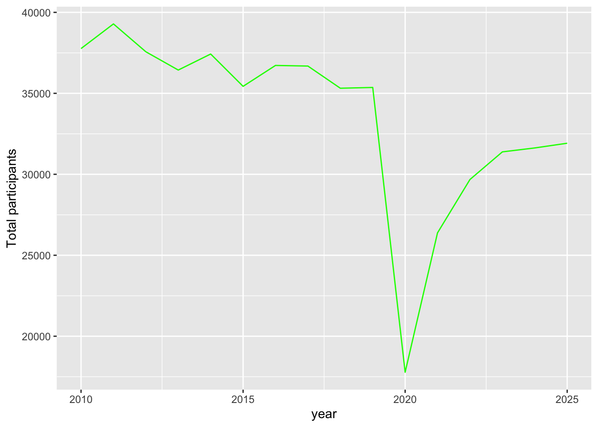
fd_by_year |>
ggplot() +
geom_point(aes(x = year, y = median_qsos)) +
geom_line(aes(x = year, y = median_qsos), color = median_color) +
ylab("Median QSOs/station")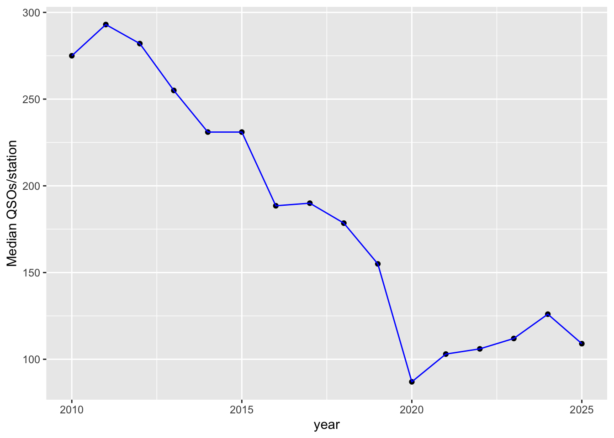
fd_by_year |>
ggplot() +
geom_point(aes(x = year, y = max_qsos)) +
geom_line(aes(x = year, y = max_qsos), color = max_color) +
ylab("Max QSOs")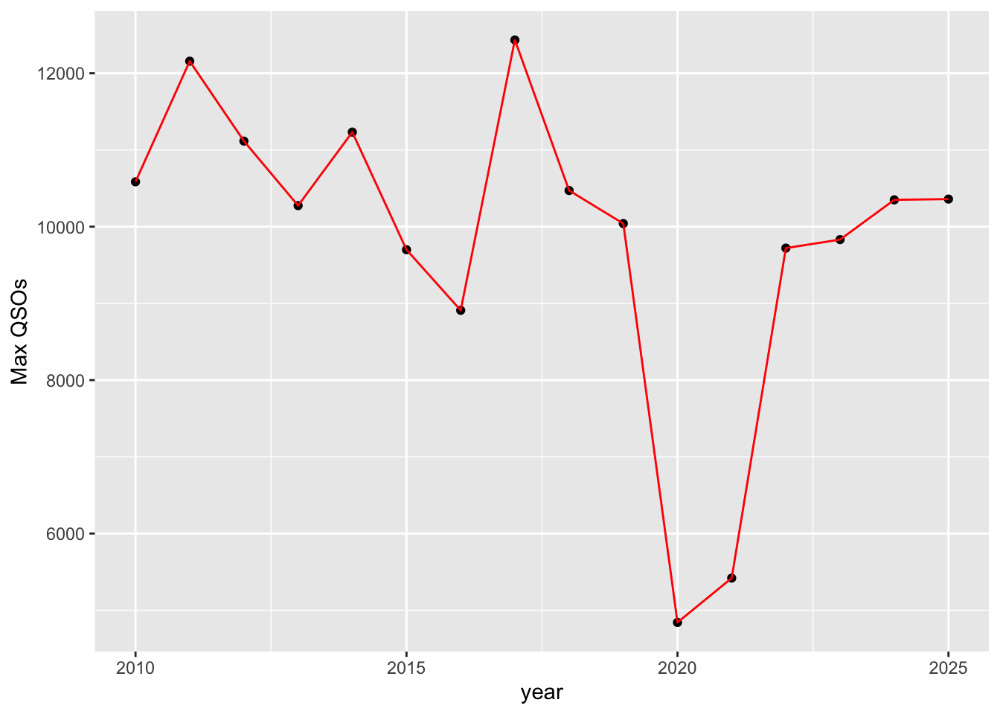
fd_by_year |>
ggplot() +
geom_line(aes(x = year, y = max_qsos), color = max_color) +
geom_line(aes(x = year, y = median_qsos), color = median_color) +
ylab("Max & median QSOs")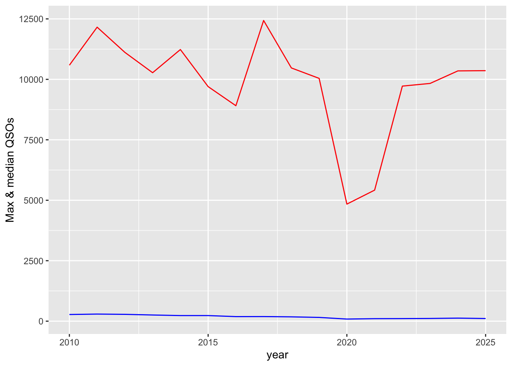
fd_by_year |>
ggplot() +
geom_line(aes(x = year, y = tot_qsos), color = tot_color) +
ylab("Total QSOs")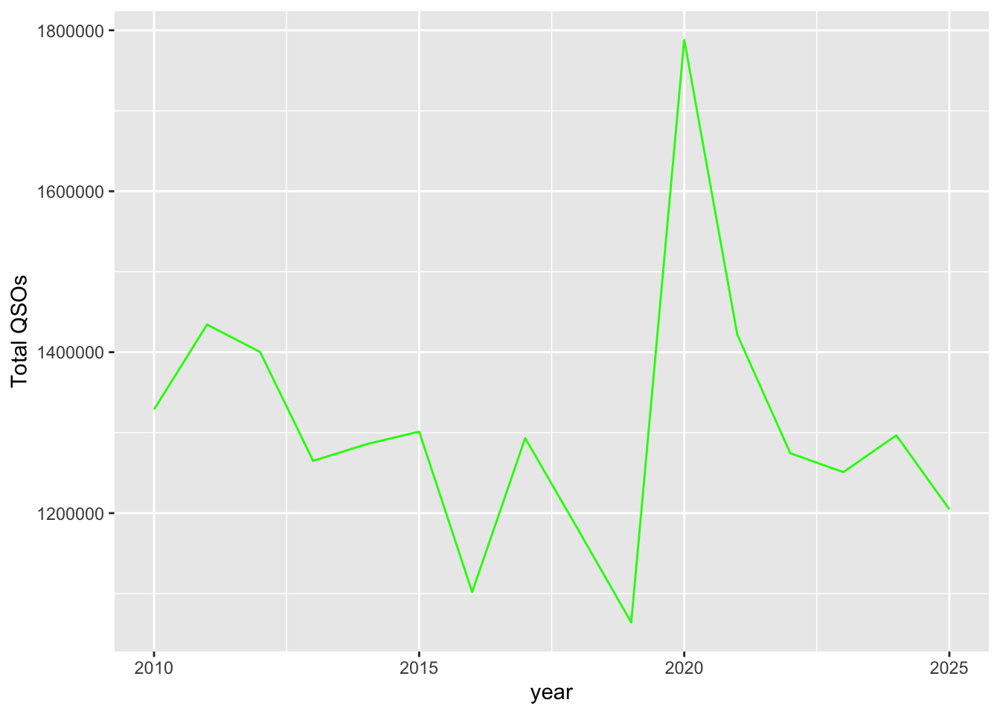
This section visualizes data about the participating stations.
fd_by_year |>
ggplot() +
geom_line(aes(x = year, y = n_stations), color = tot_color) +
ylab("Total participating stations") 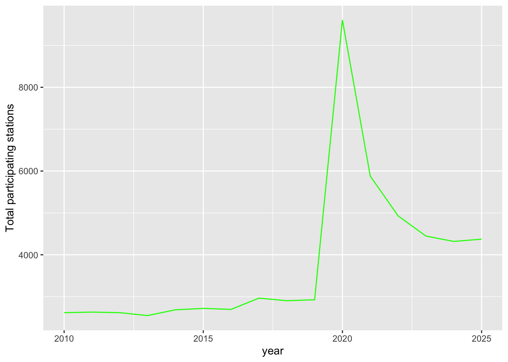
fd_by_year |>
ggplot() +
geom_line(aes(x = year, y = max_xmtrs), color = max_color) +
geom_line(aes(x = year, y = median_xmtrs), color = median_color) +
ylab("Max & median transmitters")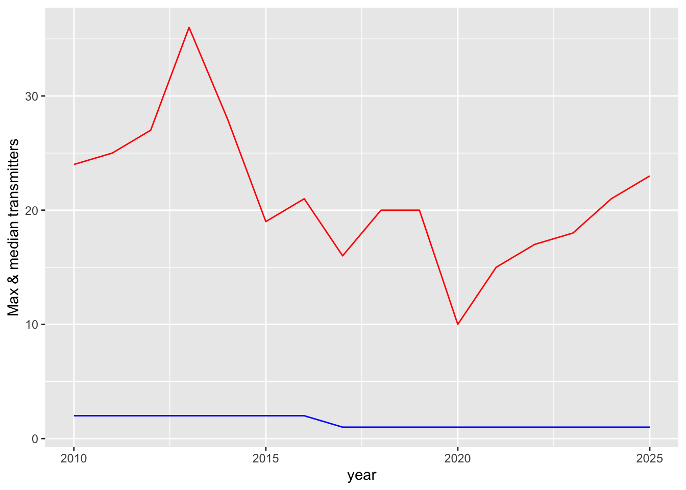